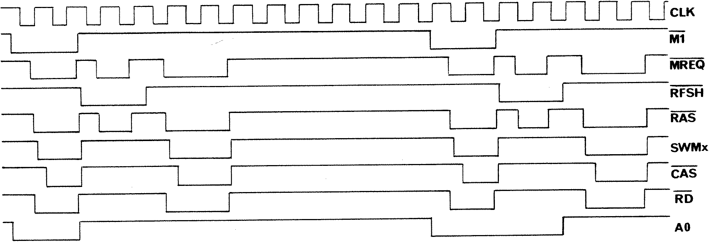

required if only the 64k version is to be used. It is then sufficient to tie
the reset pin to the OR gate output as indicated by the dotted line. The
inverter for the clock input to the flip-flop can be taken from pin 9 (input)
and pin 8 (output) of IC 34 which does not appear to be used in the original
design. Both the extra address line A7’ and the /CAS signal should be coupled
to the RAM via 33R resistors to reduce electrical noise and ringing.

FIGURE 3
When it was first tested by writing a block of identical bytes using the
NASSYS C command, the RAM showed a lot of corrupted bytes. The reason for this
took me many hours to uncover. Eventually I discovered that the read/write
line on pin 1 of the data bus buffer IC 2 suffered from spurious negative
pulses of about 50 nSec duration. These pulses occurred every time the /RAMDIS
signal was activated. This line goes low about 50 to 60 nSec after /MREQ;
thus, with /CS on P6 or P7 held low, the buffer is put into the read state as
soon as /RD and /MREQ go active. Now if this is the start of a read-cycle of
memory on the main board, the read buffer on the RAM board should not be
activated, but it does not know that for 50 nSec or so, until /RAMDIS goes
active. As designed, P6 or P7 are fed from the decoders IC 22 and IC 23, or IC
24, and these, together with the address latch IC 25, produce sufficient delay
that /RAMDIS goes low before /CS and hence there is no timing problem. The
solution which seemed to be most simple was to produce a version of /MREQ
delayed by about 60 nSec, and apply it to the Nascom SEL pin (which is coupled
directly to bus line 11); this stops IC 36 from going low until after /RAMDIS
goes active, if it is going to. I used two gates from a CMOS 4049 inverter
connected in series, which produces sufficient delay. This is the only
additional chip which is required to complete the 64k conversion. I must
confess that I thought I still had problems, even after applying the delay,
but this turned out to be nothing to do with the modified board, but rather,
that I was testing it using a 10 inch extension board to give me more ready
access to the RAM card; it turned out that this introduced sufficient spurious
fluctuations to the bus lines to cause corruption of some of the data. Finding
this also wasted a considerable amount of time – so be warned. With all the
bugs removed, the board functioned perfectly without wait-states at 4 MHz.